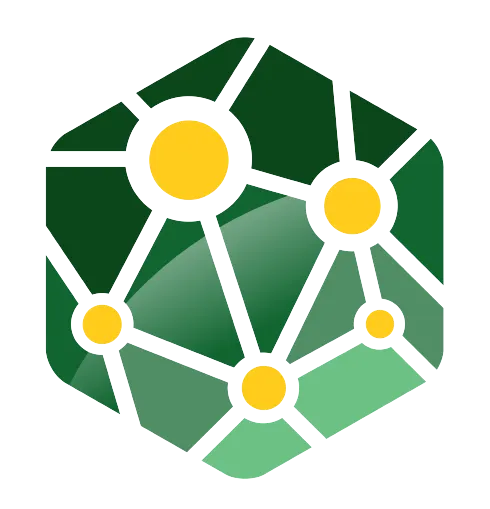
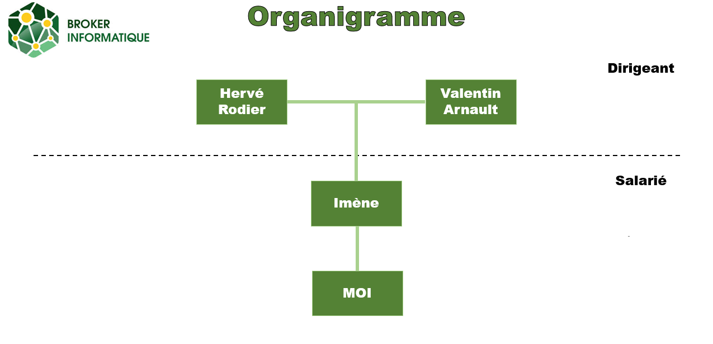

ANAS SELLAM
👨💼 ÉTUDIANT · BTS SIO SISR
MASSY, FRANCE
Bienvenue sur mon portfolio en ligne !
Je suis étudiant en BTS SIO option SISR (Solutions d'Infrastructure, Systèmes et Réseaux) au Lycée Parc de Vilgénis à Massy. Passionné par l'informatique et les nouvelles technologies, je me spécialise dans l'administration des systèmes et des réseaux.
Mon parcours m'a permis de développer des compétences solides en infrastructure IT, cybersécurité et gestion de réseaux. Je suis constamment à la recherche de nouveaux défis techniques et d'opportunités pour approfondir mes connaissances dans le domaine des systèmes et réseaux.
Ce portfolio présente mon parcours académique, mes compétences techniques, ainsi que les projets et expériences professionnelles que j'ai pu réaliser durant ma formation.
📚 Parcours académique
BTS SIO (Services Informatiques aux Organisations)
Option SISR - Solutions d'Infrastructure, Systèmes et Réseaux
Lycée Parc de Vilgénis, Massy
Baccalauréat STI2D
Option SIN (Système d'Information et Numérique)
Lycée Polyvalent Jean Jaurès, Argenteuil
🎓 Le BTS SIO
Qu'est-ce que le BTS SIO ?
Le BTS Services Informatiques aux Organisations est un diplôme de niveau Bac+2 qui forme des techniciens supérieurs capables de gérer et d'administrer le système d'information d'une entreprise. Cette formation polyvalente couvre deux domaines majeurs de l'informatique et prépare les étudiants aux métiers du numérique.
Le BTS SIO s'articule autour d'enseignements techniques, professionnels et généraux, avec une forte composante pratique à travers des projets et des stages en entreprise. Il permet d'acquérir des compétences recherchées par les entreprises dans un secteur en constante évolution.
🔧 Option SISR - Solutions d'Infrastructure, Systèmes et Réseaux
L'option SISR forme des spécialistes capables d'installer, d'administrer et de maintenir les infrastructures systèmes et réseaux d'une organisation. Les professionnels SISR sont essentiels pour garantir la disponibilité, la sécurité et la performance du système d'information.
Les compétences du BTS SIO SISR sont organisées en 3 blocs :
Support et mise à disposition de services informatiques
- Gérer le patrimoine informatique
- Répondre aux incidents et aux demandes d'assistance
- Développer la présence en ligne de l'organisation
- Travailler en mode projet
- Mettre à disposition des utilisateurs un service informatique
Administration des systèmes et des réseaux
- Concevoir une solution d'infrastructure réseau
- Installer, tester et déployer une solution d'infrastructure réseau
- Exploiter, dépanner et superviser une solution d'infrastructure réseau
Cybersécurité des services informatiques
- Protéger les données à caractère personnel
- Préserver l'identité numérique de l'organisation
- Sécuriser les équipements et les usages des utilisateurs
- Garantir la disponibilité, l'intégrité et la confidentialité des services informatiques
💡 Pourquoi j'ai choisi l'option SISR
J'ai choisi l'option SISR car je suis passionné par l'administration des systèmes et la gestion des infrastructures réseaux. L'aspect technique et concret de cette spécialisation m'attire particulièrement : configurer des serveurs, sécuriser des réseaux, résoudre des problèmes complexes sont des défis qui me motivent au quotidien.
De plus, la cybersécurité est un enjeu majeur pour toutes les organisations aujourd'hui, et l'option SISR permet d'acquérir des compétences essentielles dans ce domaine en pleine expansion. Je souhaite contribuer à la protection et à la performance des systèmes d'information, un rôle stratégique dans le monde professionnel actuel.
💼 Expérience professionnelle - Stage

Broker Informatiques
Secteur : Rachat, reprise, revalorisation et recyclage de parc informatique.
Localisation : Ennery, France
Broker Informatique est une entreprise de 3 employés spécialisée dans le rachat, la reprise et la valorisation de matériel informatique d’entreprise. Elle accompagne les organisations dans la gestion de leurs équipements IT en fin de vie, en proposant des services d’estimation, de collecte, d’effacement sécurisé des données et de reconditionnement ou recyclage. Son activité s’inscrit dans une démarche d’économie circulaire, alliant performance économique, sécurité des données et responsabilité environnementale.
🎯 Domaines d'activité
📊 Ma position dans l'organisation

Premier Stage
🎯 Missions principales
Durant mon stage, réalisé chez un reconditionneur de matériel informatique, j’ai découvert le travail quotidien autour de la maintenance et de la remise en état d’équipements informatiques. Cette expérience m’a permis de mieux comprendre le fonctionnement du matériel et de développer mes compétences techniques sur du matériel physique dans un cadre professionnel.
- Mission 1 : Creation de clé bootable.
- Mission 2 : Installation de Windows 11 sur des ordinateurs
- Mission 3 : Démontage d’ordinateurs afin de récupérer des composants (RAM et stockage).
- Mission 4 : Utilisation de HWiNFO pour l’identification et l’analyse des composants matériels des ordinateurs portable.
🛠️ Technologies et outils utilisés
Rufus, HWiNFO, Windows 11, ordinateurs, tournevis
📈 Compétences développées
Au cours de mon stage, j’ai renforcé mes compétences en maintenance matérielle et en préparation de matériel informatique reconditionné, tout en développant mon autonomie et ma rigueur professionnelle. Ce stage m’a également permis d’échanger avec les dirigeants et de mieux comprendre les réalités de l’entrepreneuriat, notamment les difficultés liées à la création et à la gestion d’une entreprise.
Deuxième Stage
🎯 Missions principales
Lors de mon second stage dans la même entreprise, mes missions ont évolué vers des tâches plus techniques et structurantes. J’ai participé à l’analyse d’un environnement informatique, à la mise en place de solutions de déploiement et d’administration système, ainsi qu’à des travaux réalisés en environnement virtualisé. Cette expérience m’a permis de renforcer mes compétences en systèmes et réseaux et de gagner en autonomie.
- Mission 1 : Audit d'un parc informatique pour faire une valorisation.
- Mission 2 : Mise en place d'un service de deploiement de Windows 11.
- Mission 3 : Creation d'un questionnaire sur le site de l'entreprise.
- Mission 4 : Creation de la v1 sur environnement virtuel d'un Active Directory avec un serveur de fichier.
🛠️ Technologies et outils utilisés
Excel, Word, Windows 11, Windows serveur 2025, Oracle VirtualBox, Tally, Iventoy
📈 Compétences développées
Ce stage m’a permis de renforcer mes compétences en systèmes et réseaux, notamment en analyse d’un environnement informatique, en déploiement de postes et en administration système dans un contexte virtualisé. J’ai également développé des compétences professionnelles telles que l’autonomie, la rigueur et la compréhension des exigences du monde professionnel.
🗂️ Mes projets
Mise en place d’un domaine Active Directory
Projet : TPMise en place d’un domaine Active Directory avec gestion des utilisateurs, des groupes et des stratégies de sécurité dans un environnement virtualisé.
Création d’un site web vitrine
Projet : PersonnelCréation d’un site web responsive en HTML et CSS pour présenter une activité et améliorer la visibilité en ligne.
Gestion des incidents informatiques
Projet : ProfessionnelTraitement de tickets d’incidents utilisateurs, diagnostic, résolution de problèmes matériels et logiciels.
🧠 Mes compétences
- Installation et configuration de Windows 10 / 11
- Administration Windows Server (2022 / 2025)
- Gestion des utilisateurs et groupes
- Active Directory (OU, GPO, stratégies de sécurité)
- Serveur de fichiers et gestion des droits NTFS
- Maintenance matérielle et logicielle
- Modèle OSI et TCP/IP
- Adressage IP (IPv4)
- Configuration réseau LAN
- DHCP, DNS
- Notions de VLAN
- Dépannage réseau
- Sécurisation des postes utilisateurs
- Gestion des droits et des accès
- Sauvegarde et restauration des données
- Protection des données personnelles (RGPD)
- Bonnes pratiques de sécurité informatique
- Gestion des incidents utilisateurs
- Assistance et support technique
- Diagnostic matériel et logiciel
- Préparation de postes informatiques
- Utilisation d’outils de ticketing (GLPI)
- Virtualisation avec Oracle VirtualBox
- Création de machines virtuelles
- Environnements de test
- Déploiement de services en environnement virtualisé
- Windows, Windows Server
- Rufus, Ventoy
- HWiNFO
- Excel, Word
- VS Code
- Autonomie
- Rigueur
- Organisation
- Esprit d’analyse
- Travail en équipe
- Communication professionnelle
📬 Contact
Me contacter
Vous pouvez me contacter pour toute question, opportunité de stage, alternance ou collaboration professionnelle.
- Nom : Anas SELLAM
- Formation : BTS SIO SISR
- Localisation : Massy, France
- Email : anas.sellam@email.com
- LinkedIn : linkedin.com/in/anas-sellam